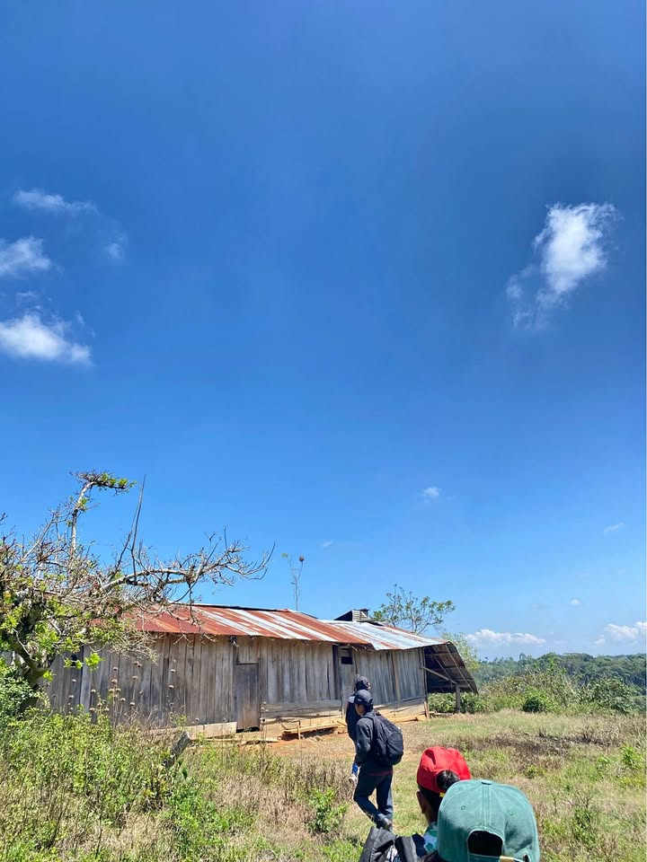

Precio desconocido 13.5 ha

🌱 ¡13.5 HECTÁREAS DE TERRENO AGRÍCOLA EN RIOJA! 🌱 📍 Ubicado a solo 20 minutos de Rioja, por la carretera hacia el caserío El Triunfo. Características: ✅ 4 hectáreas de inverna ✅ 1 hectárea para arroz. ✅ 8.5 hectáreas restantes de monte, con potencial para mecanización y ampliación agrícola, ideales para implementar nuevos cultivos como yuca, plátano, café, cacao, entre otros. ✅ Algunas plantas frutales de cacao viejo, coco y ciruela. ✅ Casa de campo. ✅ Acceso a Agua (Río Ukiwa) ✅ Acceso para movilidad Una propiedad amplia, con área actualmente productiva y gran potencial para seguir desarr